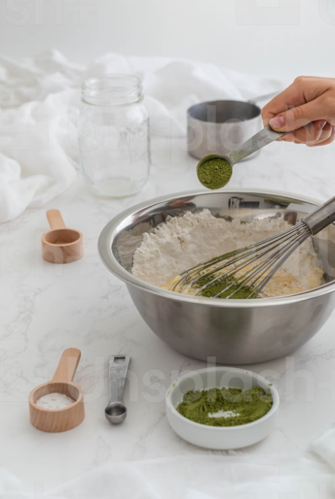

Introduce waffles and learn how to make them.

Soy milk is made from soy (yellow beans) and can replace milk or water. The process is still the same. You may need more clarification on the ingredients, which is a little expensive. Think about what you will eat for your body and what the body needs. Isn't it a good reason for you to realize what it needs? This price is reasonable. And you can go up to the online grocery store to buy premix power for low carbon. Today we introduce a premix power and the waffle recipe.
Ingredients:
Almond powder, Erythritol, Psyllium powder, Aluminum-Free Baking Powder, vanilla powder (can without the last one)
Recipe:
Premix power 60g, one egg, soy milk 20g (fresh cream 20g), water 20g (if you don't want water, you can plus soy milk to 40g)
.png)
Step:
1. First, we add soy milk, egg, and premix power together, and when they stir well, keep stirring 5-6 times, then let go.
2. Second, warm up your pan with a small fire, and pour the first step into it.
3. Fry until small bubbles form on the surface, then flip over.
4. Fry it for 30 seconds, then leave the pan. Well done!
.png)
Note:
1. If you use a handheld eggbeater to mix the stuff, do not over-stir.
2. If you use a waffle maker, based on the power of each machine being different, please adjust the time yourself.
3. Even though it tastes good, remember to eat in moderation😊
***The ingredient can be straightforward with only Almond powder, and Aluminum-Free Baking Powder can replace flour and egg. Based on some places, there appears to be an egg shortage. It's an excellent way to keep satisfying your body and your tongue.